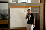
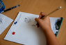
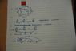
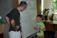
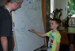
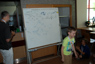
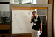
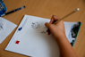
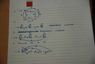
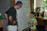
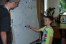
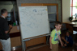Otok zakladov
Kako računalnik prebere in “razume”, kar vtipkamo? Kako delujejo tipke na mobilnih telefonih (ki nimajo cele tipkovnice)? Kaj se skriva za bankomati?
Nekaj, čemur računalnikarji pravijo “končni avtomat”. Končni avtomat pa je … no, nekaj podobnega kot zemljevid gusarskega otočja, s katerim bomo poiskali pot do Otoka zakladov.
Namen
Otroci spoznajo koncept končnih avtomatov in neformalno oblikujejo regularne izraze.
Potrebščine
Vsak otrok v vlogi gusarja potrebuje
- prazen zemljevid otokov, v katerega bo vrisoval povezav (nahaja se v svojem PDFu),
- pisalo in dodatni papir za naloge po glavni igri.
Za otroke, ki predstavljajo otoke
- listi z imenom otoka in smermi. Liste prepogni tako, da “gusarji” vidijo le polovico z imenom otoka, polovico s smermi, v katere vozijo ladje, pa vidijo le otroci, ki predstavljajo “otoke”.
Pripravi tudi ostali material za projeciranje in prikazovanje (nahaja se v ločenem PDF).
Natisniti je torej potrebno po en izvod vsega materiala, le praznih zemljevidov potrebujemo toliko, kolikor je otrok.
Dodatna navodila
Aktivnost izvajaj na prostem. Če to ni možno, potrebuješ dovolj velik prostor, na primer telovadnico.